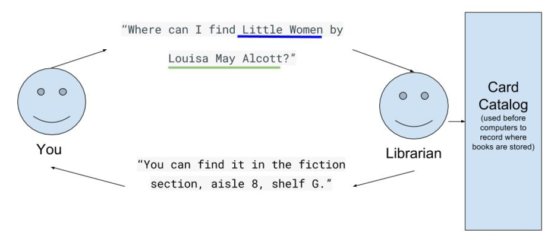
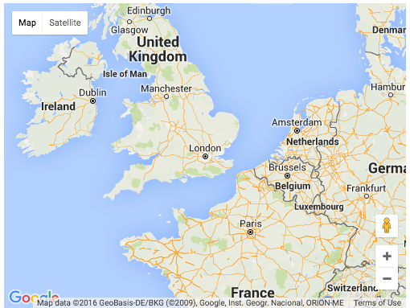

Introduction to APIs
Web APIs Overview
- What is an API?
- What APIs Can Access
- REST APIs
APIs in JS Textbook!
Read pages #

API = Application Programming Interface
Have you ever wondered how Facebook is able to automatically display your Instagram photos?
Have you ever wondered how the Starbucks store locator gives you directions to the closest Starbucks? It asks Google Maps!
As a programmer, you don't want to install a database of all the world’s addresses and algorithms in order to search them on your server. (hint: just use Google's API)

A helpful diagram
You can’t use the card catalog yourself because you don’t have access and you don’t know how to use it.
Imagine your website is looking for a book...
Your website doesn’t know how to access or read the Google Books database, but it can use the Google Books API to request the book.
How is an API like a librarian?
| Librarian | API |
|---|---|
| Human Language (like English) | HTTP protocol |
| Question containing details (title and author) | Request containing parameters (title and author) |
| Answer | JSON response including URL |
Practice: Search for a Book
- Open this URL in your browser: https://www.googleapis.com/books/v1/volumes?q=little+women+inauthor:alcott
- Congratulations! You’ve successfully made an API request. The response has more information than we needed, but it does contain the download URL we were looking for.
- Try replacing the parameters (the part after “q=”) to find another book. For example: https://www.googleapis.com/books/v1/volumes?q=very+hungry+caterpillar
Companies use APIs to boost traffic and business
- In 2013, there were over 10,000 APIs published by companies for open consumption.
- Companies like Google, Instagram, and Square publish APIs so that your website can access their information in a secure way. This boosts traffic and business for them.
- You can learn about many different companies and their APIs here
Web APIs Overview
- What is an API?
- What APIs Can Access
- REST APIs
What APIs Can Access
- 1. Functionality: We use APIs to outsource part of our application’s functionality to someone else, so we can focus on the unique bits.
- Example: Starbucks asks Google Maps for directions to your closest location.
2. Public Data: There is a huge amount of data available, and APIs make that data available to use in a structured way.
- Example: You can search for books through Google Books.
3. User Data: We also use APIs to access data from other products and integrate them with our own. Users use multiple products and expect for them to work together - synergy.
- Example: You can sign into many websites using your Facebook account, which then automatically import your name, email address, etc.
The Diagram

APIs are so useful!
We need to understand:
- HOW to best use APIs
- WHAT APIs are out there
- WHY you should use them
Web APIs Overview
- What is an API?
- What APIs Can Access
- REST APIs
REST APIs
REST APIs conform to a set of constraints.
Read this article.
Then let's watch the first 6 minutes of
this video!
HTTP Requests
- APIs are accessed using HTTP, which is the language of the Internet.
- You make an HTTP request using your browser every time you visit a URL. Your browser is doing some of the work behind the scenes, though; there is more to an HTTP request than a URL. Learn all of the parts of an HTTP request here.
How do APIs Work?

How do APIs work?
- An API is used to bring in information from another server, and there's only so many ways that you can do that in the client.
- The API itself isn’t really a box floating in space, so much as a chunk of code that acts as a gatekeeper.
- That code helps translate the third party’s data into something you can read, and it makes sure that only authorized users can access the data (a process called “authentication”).
Let's use the Google Maps API!

Using the Google Map API
1. Load the Google API
The Google Maps API is a JavaScript library. It can be added to a web page with a script tag:
Google Maps API
2.Set Map Properties
Create a function to initialize the map:
function initialize() {
}
In the initialize function, create an object (mapProp) to define the properties for the map:
var mapProp = {
center:new google.maps.LatLng(51.508742, -0.120850),
zoom: 7,
mapTypeId: google.maps.MapTypeId.ROADMAP
};
How the code works:
- The center property specifies where to center the map.
- The LatLng object centers the map on a specific point. Pass the coordinates in the order: latitude, longitude.
- The zoom property specifies the zoom level for the map. zoom: 0 shows a map of the Earth fully zoomed out.
- The mapTypeId property specifies the map type to display. The following map types are supported:
- ROADMAP (normal, default 2D map)
- SATELLITE (photographic map)
- HYBRID (photographic map + roads and city names)
- TERRAIN (map with mountains, rivers, etc.)
Google Maps API
3. Create a Map Container
Create a div element to hold the map. Use CSS to size the element:
Google Maps API
4. Create a Map Object
var map=new google.maps.Map(document.getElementById("googleMap"), mapProp);
The code above creates a new map inside the div element with id="googleMap", using the parameters that are passed (mapProp).
Google Maps API
5. Add an Event Listener to Load the Map
Add a DOM listener that will execute the initialize() function on window load (when the page is loaded):
google.maps.event.addDomListener(window, 'load', initialize);
Marvel API Key Exercise
Ask a user for a character name, then make an API call to fetch and then display the character's thumbnail, name, and description to the user.
Click here
for the instructions and links to resources to help you sign up for
an API key, use async/await
and fetch().

More on Web APIs
Watch these Web API videos.
Web APIs Overview
- What is an API?
- What APIs Can Access
- REST APIs
THE END
Thank you for your attention!